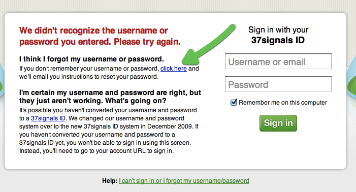
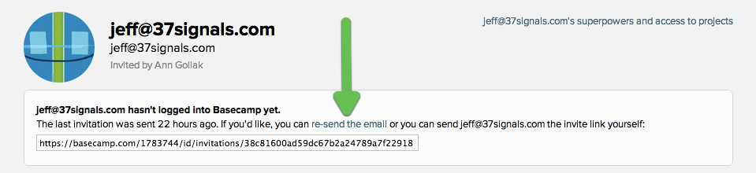

Quick question? Get fast answers on Twitter.
Tweet a question to @37signals for a quick answer between – Mon–Fri.
You can send a password reset email to any member of your account.
After an unsuccessful login attempt, folks will see the option to have a password reset sent to them. 

Next help article: Granting admin powers →
Tweet a question to @37signals for a quick answer between – Mon–Fri.
For in-depth questions, you can file a support ticket to get answered personally by us.